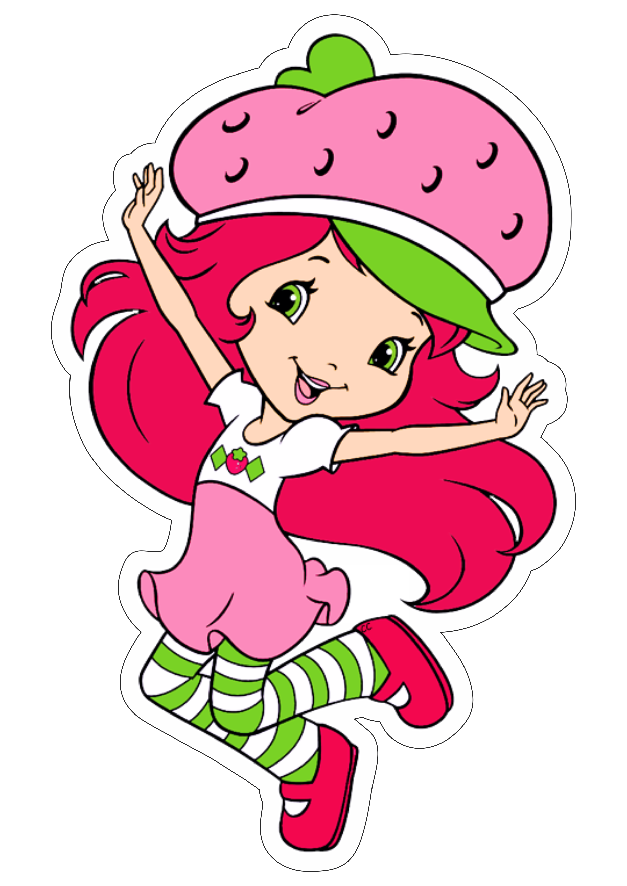

Quem é?
A Moranguinho (conhecida originalmente em inglês como Strawberry Shortcake e em Portugal como Docinho de Morango) é uma personagem fictícia criada em 1980, sendo inicialmente usada em cartões comemorativos antes de virar uma famosa franquia de bonecas perfumadas, brinquedos, livros e desenhos animados.
Aparência
Moranguinho é uma jovem com a pele clara e olhos verdes brilhantes com uma fileira de sardas. Seu cabelo varia entre magenta e vermelho e atinge sua cintura com vários cachos e desgastado com um chapéu rosa morango com a aba de folha verde. Abaixodo seu chapéu, ela veste uma curva listrado verde e branco com um morango no meio. Seus lábios são rosa claro. Sua roupa comum consiste em uma blusa rosa-branco pálido com um morango cercado por dois diamantes verdes com linhas através deles. A porção de saia é rosa com impressão magenta ponto, vestido com calças listradas verdes e brancas e sapatos Mary Jane geralmente um tom de rosa ou vermelho.
Personalidade
Moranguinho é uma menina jovem, doce e animada com muita criatividade e uma visão positiva da vida. Com isso, ela é capaz de fazer amizade com qualquer pessoa com facilidade, junto com sua natureza passiva. Ela sempre coloca as necessidades dos outros antes dela própria e enquanto ela não quer ferir os sentimentos, ela não tem nenhum problema de ser honesto com os outros também.